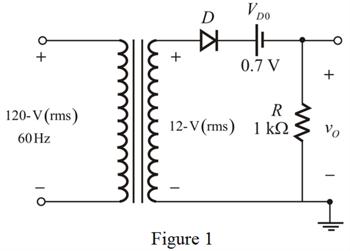
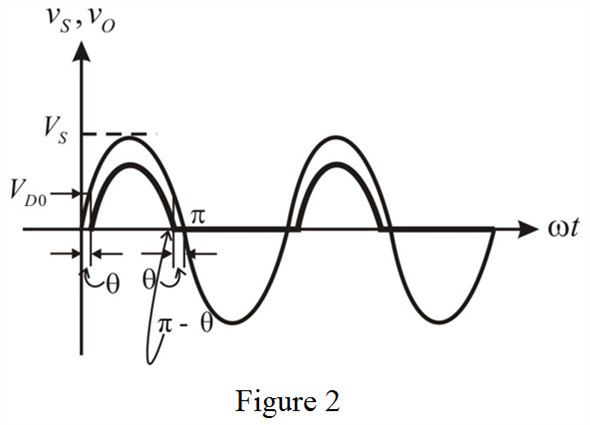

Step 1:
Calculate the secondary voltage for a step-down transformer.
Draw the modified circuit diagram.

Step 2:
Calculate the peak voltage of the rectified output.
Calculate the peak value of the output voltage.
Therefore, the peak value of the output voltage, is .
The input to the Half-wave rectifier is,
Since the diode is connected in Forward bias, it will conduct for positive half cycle.
Step 3:
Draw the input/output waveforms together.

Step 4:
From the waveform,  is the angle at which, the input signal reaches
is the angle at which, the input signal reaches  and the diode start conducts. The diode conduction terminates at and the hence the total conduction angle is or .
and the diode start conducts. The diode conduction terminates at and the hence the total conduction angle is or .
The expression for the diode voltage is,
Substitute for and for  .
.
Step 5:
The diode conduction terminates at,
Therefore, the total conduction angle is
Step 6:
Calculate the fraction of cycle that the diode conducts.
Therefore, the diode conducts for .
Calculate the average value (dc component) of the output.
The limits of the integration are from:

From the circuit diagram, the output is,
Where, in the interval
The expression for the output voltage is,
Step 7:
The average output voltage is,

Therefore, the average output voltage,  is .
is .
Step 8:
The current through the resistor is,
The average current is,

Substitute for and  for
for  .
.
Therefore, the average current in the load, is .